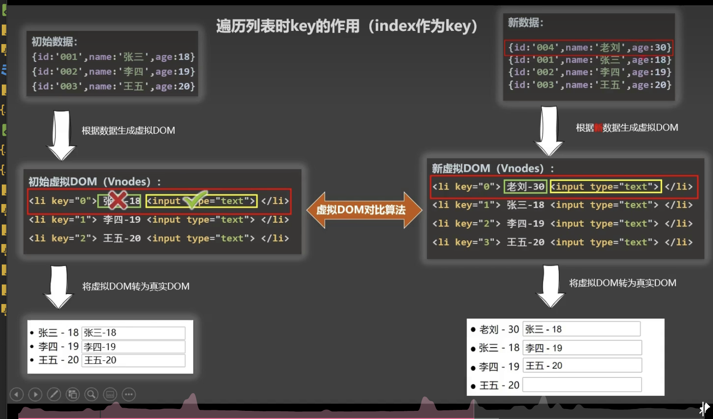
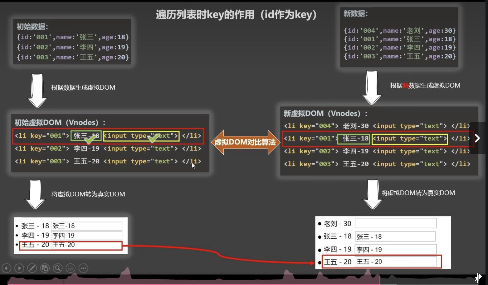

react、vue中的key有什么作用?(key的内部原理)
1、虚拟dom中key的作用:
key是虚拟dom对象的标识,当标识中的数据(内容)发生变化时,vue会根据 「新的内容」 生成 「新的虚拟dom」,
随后vue进行 「新的虚拟dom」 与 [旧虚拟dom] 的差异对比,比较规则如下:
2、对比规则:
(1).在旧虚拟dom中找到了和新虚拟dom相同的key:
a.若虚拟dom中内容没变,直接使用之前的真实dom;
b.若虚拟dom中内容变了,则生成新的真实dom,随后替换掉页面中之前的真实dom.
(2).旧虚拟dom中没找到与新虚拟dom相同的key,创建新的真实dom,随后渲染到页面中.
3、使用index作为key可能会引发的问题:
(1).若对数据进行:逆序添加、逆序删除等破坏顺序的操作,会产生没有必要的真实dom更新===》页面效果没问题,但效率低.
(2).如果结构中还包含输入类dom:会产生错误的dom更新===》页面的界面有问题
4.开发中如何选择key?
1.最好是使用每条数据的唯一标识作为key,比如id,手机号等等.
2.如果不存在对数据的顺序进行改变的操作,仅仅用于渲染列表展示,使用index作为key时没有问题的.
注意:如果对数据进行了破坏顺序的操作,不要使用index作为key.
如果遍历的时候没有指定key,vue会默认将index作为key;
使用index作为key:

使用id作为key:
